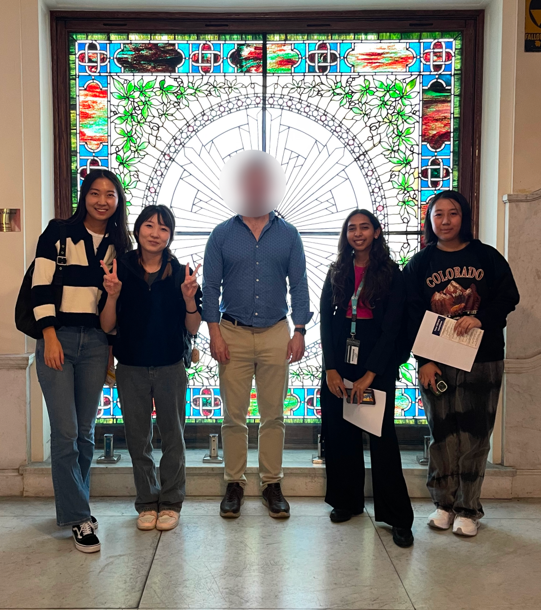

Anchor - JCFPL✕SVA
UI/UX Design · Product Design · Service Design
2023
2023
This Service Design project was initiated to tackle the linguistic barriers immigrant adults face in Jersey City, inhibiting their full participation in daily life due to limited English proficiency. The collaboration with the Jersey City Free Public Library(JCFPL) aimed to redesign existing systems and introduce innovative solutions to enhance the English as a Second Language (ESL) learning experience—the project aimed to create a digital solution beyond traditional classroom settings. Anchor was conceived as a user-friendly, accessible online platform tailored to the Jersey City Free Public Library's ESL programs. Before delving into the experience of learning English as an immigrant, we found what the current challenges are.
Click here to watch JCFPL’s coverage of our work.
1. Understanding the problem
Immigrants often feel excluded from community conversations, face job rejections, and struggle with other challenge due to language barriers. In New Jersey, 41.6% are immigrants, with 42.5% struggling with English proficiency. They face time constraints due to work and family, financial limits on private courses, and underutilized free resources. Instructors at Jersey City Free Public Library (JCFPL) also struggle with managing student progress. They need tools to boost engagement and practical learning. Research highlighted two main challenges: lack of engagement and practical constraints, emphasizing the need for flexible, real-world application and community support.

2. Field Research
In addition to these desk research, we’ve visited libraries in New York and New Jersey to observe people, conduct in-depth interviews, and gather input from surveys and stakeholder interviews.
JCFPL Current Status:
Libraries are often perceived as dull, deterring potential ESL learners.
Lack of compelling engagement leads to disinterest in enrolling.
Predominantly one-way teaching limits interaction and student engagement.
Despite availability, the library's free and valuable resources are seldom used by learners.

3. Competitor Research
We visited our competitor, the New York Public Library, and attended their free English classes.
After observation and interviews, we found that NYPL’s teaching methods are more interactive and engaging. Additionally, many students attending the classes value the practical and social aspects of the courses.
After observation and interviews, we found that NYPL’s teaching methods are more interactive and engaging. Additionally, many students attending the classes value the practical and social aspects of the courses.

Observation of the ESL class at NYPL
Interview a student at NYPL
4. Observing & Interviews
We conducted detailed observations of the courses at Jersey City Free Public Library and had in-depth communications with the students.
Observation of the ESL class at JCFPL
Interview students at JCFPL
5. Insights
"I try to complete my assignments but cannot because they are too long, and I cannot ask someone for doubts."
Student 1
“I always worry about my attendance rate because they can remove us from class if we do not have 80% attendance.”
Student 2
“I don't know about other programs, it’s hard to find some information…”
Student 3
Students do not have enough time to complete long assignments.
Students find it challenging to track their attendance.
Students do not know much about other services offered by the library.
6. HMW
How might we make English language learning accessible and engaging for adult immigrants, to help them settle into a new environment?
7. Brainstorming
8. Co-Design
We conducted this co-design session together with Eric, our sponsor. First, we shared our research findings and the insights we had observed. Then, we invited him to brainstorm with us on how to address the existing issues. Using a card sorting method, we recorded and organized all the ideas.
Co-design with Eric
9. Synthesis
Lack of engagement
Practical Constraints
Libraries have a lot of free and reliable resources, but only a few people know and use them.
In lecture-based classes, students often take a passive role, leading to lower engagement/ and understanding.
Engaging activities capture students' interest, keeping them motivated and involved in the learning process.
People want to be more connected and engaged with others.
In lecture-based classes, students often take a passive role, leading to lower engagement/ and understanding.
Engaging activities capture students' interest, keeping them motivated and involved in the learning process.
People want to be more connected and engaged with others.
Some students have difficulty attending classes regularly due to work/child/family responsibilities.
They prefer the flexibility of studying both online and offline.
Once a student misses a class, it's hard for them to catch up.
Students want to improve their English by practicing often, but they don't have time to review lessons or do homework.
They prefer the flexibility of studying both online and offline.
Once a student misses a class, it's hard for them to catch up.
Students want to improve their English by practicing often, but they don't have time to review lessons or do homework.
10. Ideation
Flexible Learning: Lets learners study, do tasks, and practice language anywhere, anytime.
Tracking Progress: Tools help learners see their progress, know where to improve, and get personalized feedback.
Building Community: Features like forums and group activities create a supportive network for learners and instructors.
Accessing Resources: A central hub of learning materials and multimedia content for easy access, supporting different learning styles and enhancing language skills.
Tracking Progress: Tools help learners see their progress, know where to improve, and get personalized feedback.
Building Community: Features like forums and group activities create a supportive network for learners and instructors.
Accessing Resources: A central hub of learning materials and multimedia content for easy access, supporting different learning styles and enhancing language skills.
11. Wireframes & User Testing
12. Design
Home
The Home tab gives users quick access to class-related content and crucial information such as attendance and assignments.
Also, a ‘Languages’ option at the top enhances accessibility.
Also, a ‘Languages’ option at the top enhances accessibility.
E-learning - AI
In the E-learning tab, People can practice English with an AI feature called 'Genie' to improve their skills by talking to an AI voice. These scenarios are either suggested or user-generated, allowing them to practice speaking English with their own story.
E- learning - Real world situations
The E-learning tab also provides real-world conversational situations to engage with the language in a fun and practical way. People can choose what they want to learn by selecting specific sections.
Community
The Community tab helps users expand their horizons by joining discussions with people who share similar interests. Users can chat in multiple languages or connect with instructors for focused English learning help.